Oncilla OS: The Offline-First Management System for Private Academies
Enterprise-grade desktop software engineered specifically for language centers, private academies, and tutoring institutions. Built to eliminate lost tuition fees, paper attendance chaos, and cloud fragility through 100% offline local-first operational reliability.
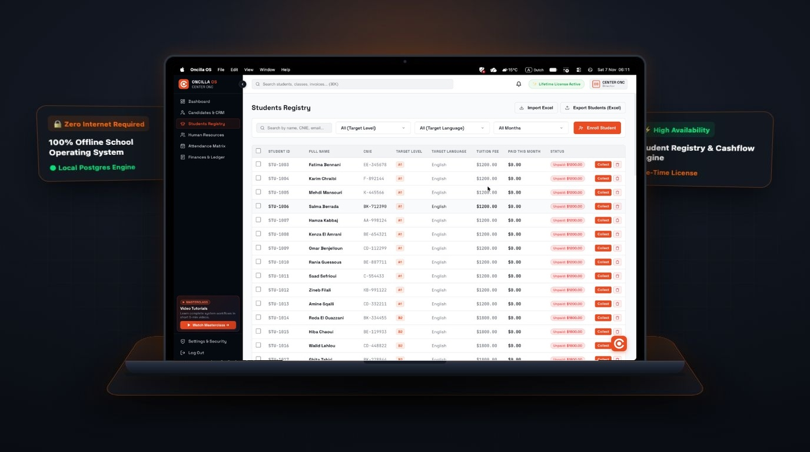
The Real Problem (Why Most Academies Struggle)
Private language academies manage hundreds of rotating students, multi-level courses, and recurring monthly tuition payments. Without a dedicated system, schools face three critical points of daily operational failure:
Lost Revenue & Unpaid Tuition
Most academies track tuition fees using paper receipts or unlinked Excel spreadsheets. When front-desk staff forget to highlight a cell or misfile a cash slip, students attend classes for months for free without the owner ever noticing.
Attendance Paper Chaos
Teachers take attendance on loose printed sheets scattered across classrooms. When concerned parents call to ask about unexcused absences, receptionists waste 15 minutes digging through dusty binders and paper folders.
The Cloud System Trap
Standard management software runs entirely in the cloud. When local internet connections lag or drop during peak rush hours (5:00 PM to 7:00 PM), the front desk completely freezes. Staff cannot register new students, check attendance, or print receipts.
The Solution: Oncilla OS Local-First Desktop Architecture
Oncilla OS is an enterprise-grade desktop management software built specifically to solve front-desk bottlenecks. All sensitive student, academic, and financial data is stored directly on the local machine with zero mandatory cloud dependency.
Zero Cloud Dependency
Runs 100% offline with zero latency. Even complete internet service provider cutoffs never stop front-desk enrollments, payments, or attendance logging.
High Data Density
Clean dark cybernetic workspace designed to surface maximum student records, live class statuses, and cash ledger telemetry per screen without horizontal scrolling.
Instant Tuition Tracking
Automated payment balance engine flags overdue student accounts in bright red the moment a student checks in, with instant 1-click payment collection.
One-Click Attendance
Instructors mark an entire room present in 3 seconds flat with bulk actions, immediately synchronizing attendance ratios and flags to student files.
Complete 10-Screen Interface Walkthrough
Click any screenshot below to inspect the interface in high resolution. Designed with precision typography, instant filters, and optimized administrative ergonomics.
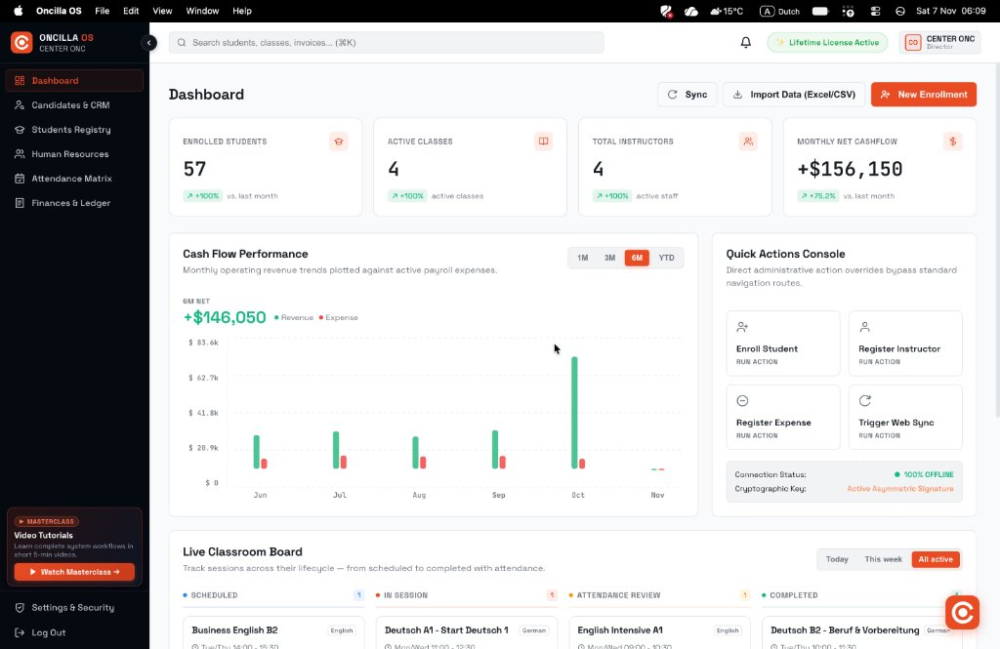
The Front-Desk Dashboard & Cash Tracker
Gives the school owner and director an immediate bird’s-eye view of daily operating metrics, active classrooms, and live financial telemetry.
- Today's Collections: Real-time net monthly cashflow ($156,150) and active collections counter.
- Cash Flow Performance: 6-month comparative telemetry plotting gross revenue against active payroll outflows.
- Live Classroom Board: Real-time status indicators tracking sessions across Scheduled, In Session, and Attendance Review.
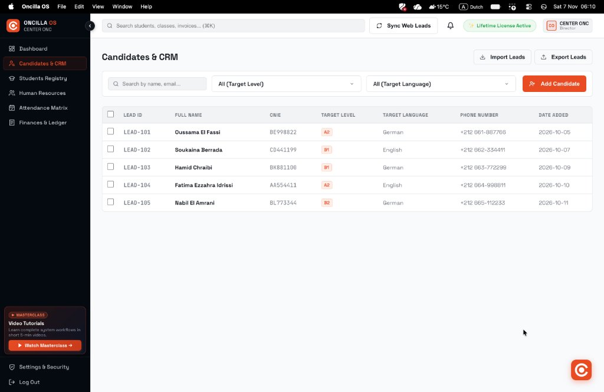
Candidates & CRM Pipeline
Manages incoming inquiries and prospective students before formal enrollment, with Moroccan national identity (CNIE) indexing and target CEFR level tags.
- Lead Intake System: Tracks lead identifiers, full names, CNIE, target language, and localized contact details.
- CEFR Proficiency Tags: Color-coded level badges (A1, A2, B1, B2) for immediate group placement.
- Web Leads Sync & Export: Seamless CSV/Excel batch imports and exports for offline lead processing.
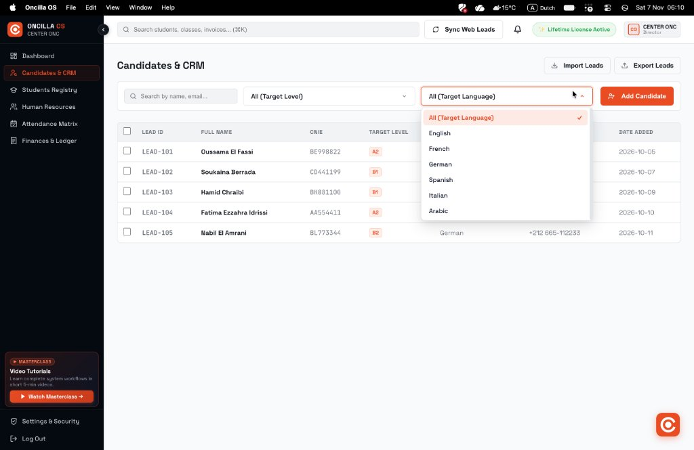
Multi-Language Department Filtering
Instant zero-latency filtering across various language programs taught at the academy, eliminating manual spreadsheet lookups.
- Language Curriculums: Filter in real-time by English, French, German, Spanish, Italian, and Arabic cohorts.
- Combined Search Queries: Filter simultaneously by CEFR level, enrollment intake month, and language stream.
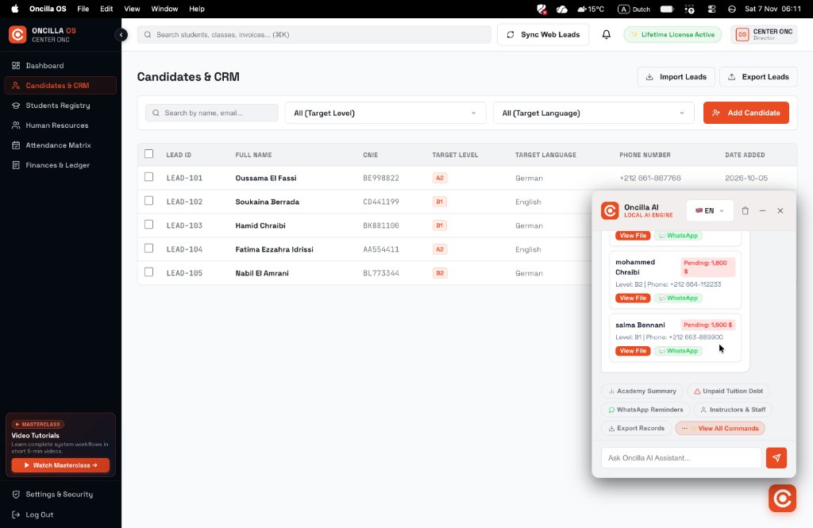
Oncilla AI: Local Intelligence Assistant
On-device AI assistant that audits academy metrics, summarizes student attendance patterns, and generates automated WhatsApp tuition debt reminders without leaking private data to third-party clouds.
- Unpaid Tuition Debt Radar: Instantly identifies overdue students with direct 1-click WhatsApp payment links.
- Local Privacy: Operates locally on the front-desk machine, protecting student phone numbers and financial files.
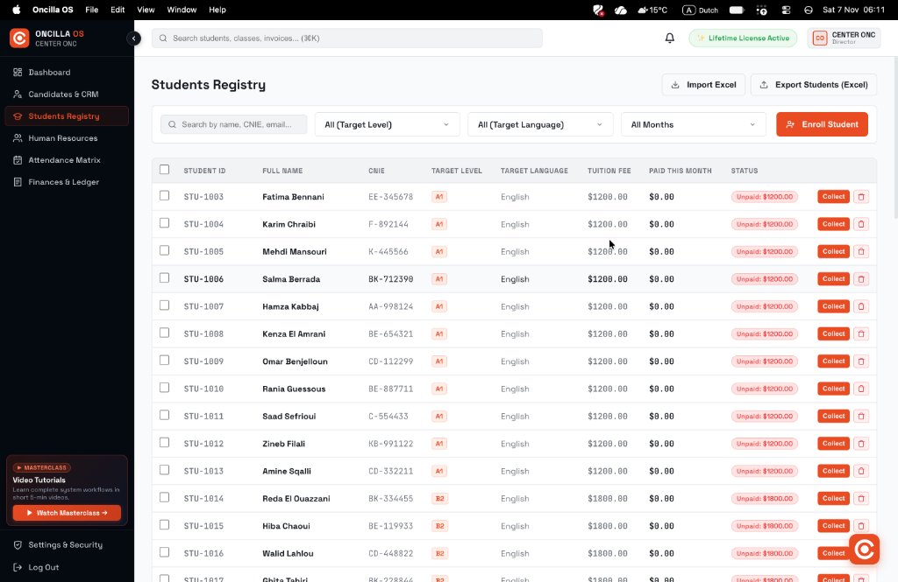
Students Registry & Tuition Payment Ledger
Completely prevents unpaid attendance and eliminates human spreadsheet errors. Surfaces immediate visual flags for every student entering the building.
- Overdue Balance Badges: Flags unpaid student accounts with bold red indicators ($1,200 / $1,800 due).
- 1-Click Collect Action: Instant payment collection drawer generating authenticated payment receipts on the spot.
- Excel Batch Management: 1-click export and import of student registries without losing formatting.
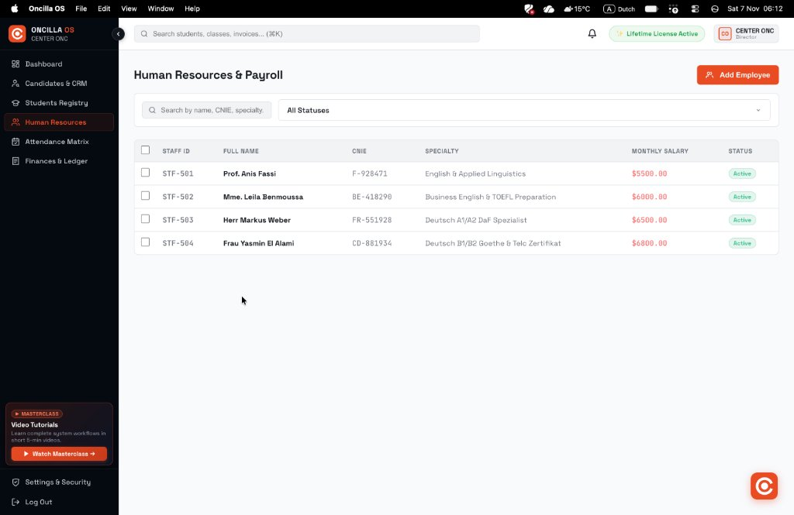
Human Resources & Faculty Payroll
Centralized teacher and administrative directory detailing pedagogical specialties, official credentials, and monthly compensation.
- Instructor Specializations: Catalogs faculty expertise (e.g. Applied Linguistics, TOEFL Prep, Goethe DaF, Telc Zertifikat).
- Salary Ledger: Real-time salary tracking automatically synced to the academy's corporate ledger expenses.
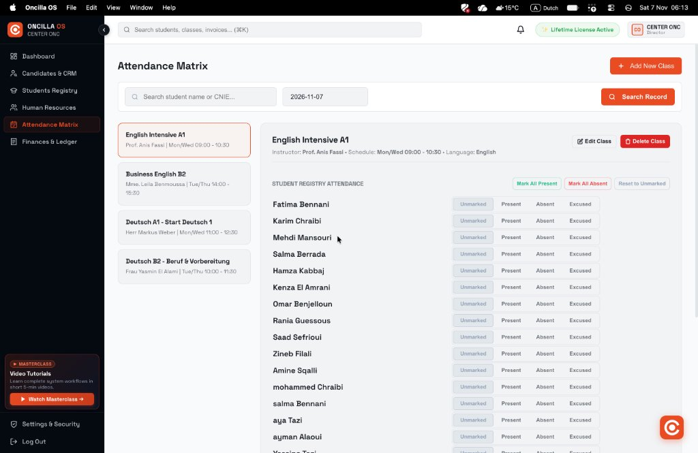
Rapid Attendance Matrix & Absence Control
Replaces loose paper sign-in sheets with a lightning-fast daily check-in that takes less than 15 seconds per group.
- Bulk Action: "Mark All Present" saves instructors 5+ minutes of manual roll-calling per session.
- Absence State Flags: Toggle between Present, Absent, and Excused with one tap.
- Permanent Audit Trail: Logs historical absences directly into student profiles for instant parent lookup.
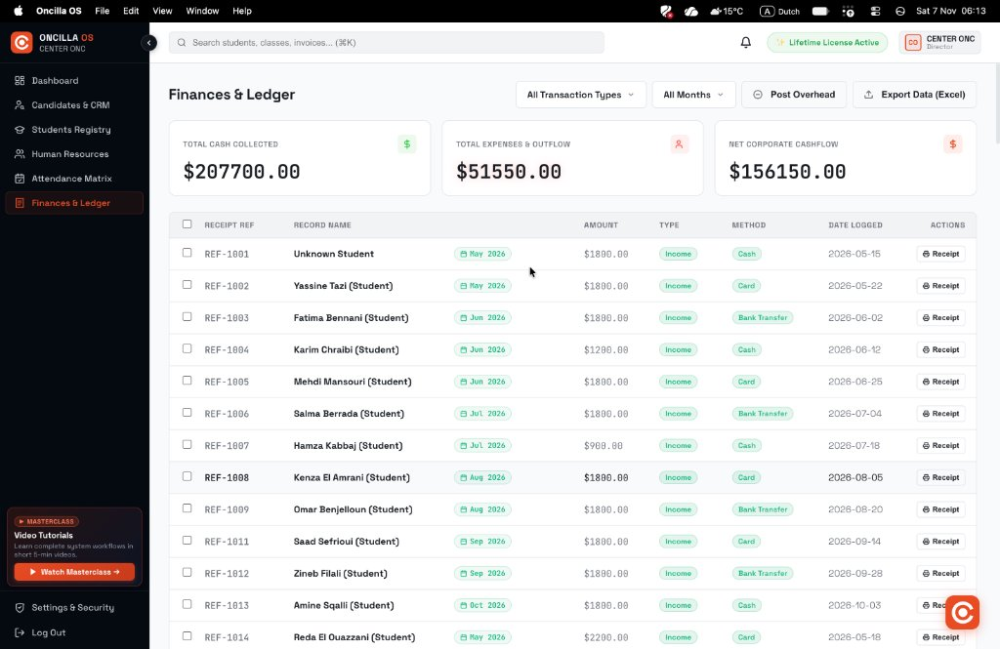
Finances & Corporate Cash Flow Ledger
Total financial transparency for academy owners. Tracks cash collections, bank transfers, credit card payments, and operating overhead in real time.
- Revenue Telemetry: Real-time tally of Total Cash Collected ($207,700), Outflows ($51,550), and Net Cashflow ($156,150).
- Audit Receipts: Automated receipt reference numbers (REF-1001, REF-1002...) with date and payment method logging.
- Post Overhead: Direct recording of classroom rent, utilities, and material expenses without third-party accounting bloat.
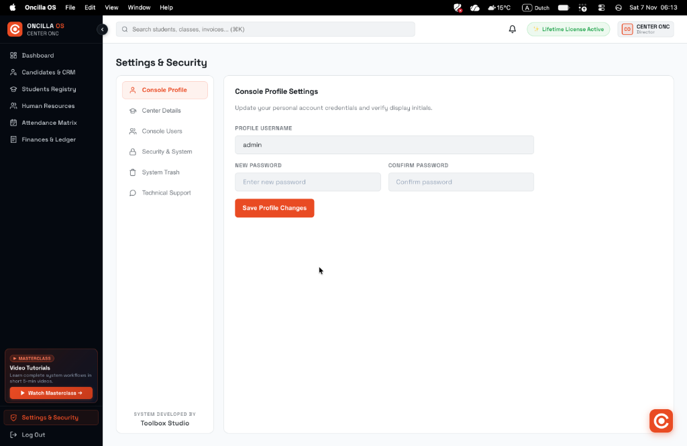
Settings & Security Console
Administrative profile controls, master passwords, center details, and lifetime offline license verification.
- Role-Based Access: Isolates director financial settings from receptionist front-desk consoles.
- Cryptographic Offline License: Asymmetric signature engine validating perpetual usage without pinging a remote server.
- Engineered by Toolbox Studio: Custom software architecture crafted for long-term operational resilience.
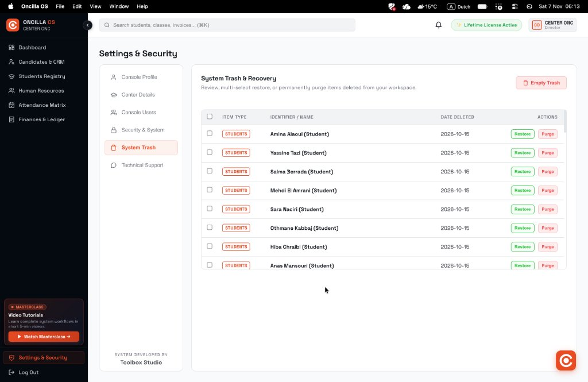
System Trash & Anti-Data Loss Recovery
Guarantees front-desk staff can never permanently delete tuition or student records by mistake. All deletions enter a recoverable staging vault.
- Soft-Delete Vault: Deleted student records, classes, or invoices are preserved with deletion timestamps.
- 1-Click Multi-Restore: Restore accidentally removed student profiles instantly without needing database rollbacks.
Measured Business Results
Replacing fragmented spreadsheets and cloud dependency with Oncilla OS produced dramatic operational and financial gains within the first 30 days of deployment:
| Operational Metric | Before Oncilla OS | After Oncilla OS |
|---|---|---|
| Payment Leakage | 12% to 18% unpaid tuition lost | Reduced to under 1% |
| Attendance Check Time | 5 to 7 minutes on paper | Under 15 seconds per class |
| Internet Outage Downtime | Front desk stops completely | 0 minutes (100% offline uptime) |
| Parent Query Resolution | 10 to 15 minutes searching binders | Instant search in under 5 seconds |
“Oncilla OS proves that enterprise software does not need complex cloud subscriptions, monthly lock-ins, or bloated menus. By focusing on local-first speed, simple operational workflows, and airtight payment tracking, it turns chaotic front desks into organized, profitable operations.”
Ready to streamline your business operations?
Whether you need a high-conversion web platform, custom desktop operational software, or automated client workflows, Toolbox Studio delivers results that scale.